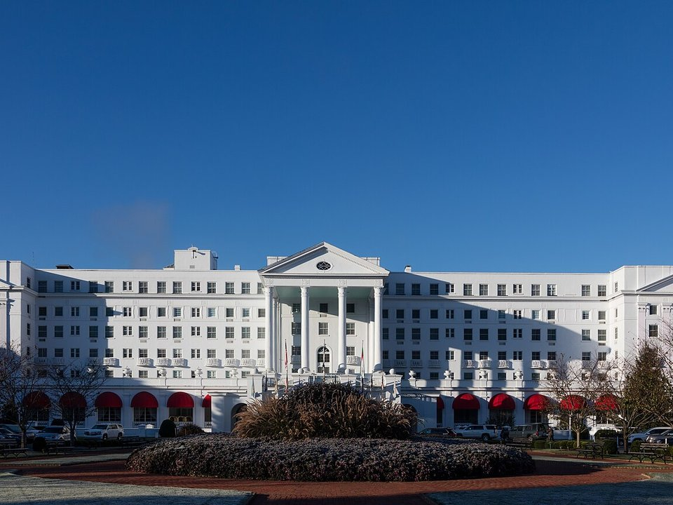

White Sulphur Springs · Grand resort
The Greenbrier
A landmark resort with Dorothy Draper’s bold interiors, a mineral spa, golf and dozens of activities. The reason to come.
Official details for The GreenbrierA legendary resort with a secret underneath.
The Greenbrier in White Sulphur Springs has hosted presidents since the 1700s, and for 30 years it hid a secret: an emergency bunker for Congress, built under the hotel during the Cold War. Fly into the valley, tour the bunker, soak in the mineral baths, play golf, and spend an afternoon in nearby Lewisburg.

Time illustration: direct distance at 150 KTAS plus 15 minutes for departure and arrival, matching the discovery page. Use ForeFlight for your actual flight plan.
KLWB, Greenbrier Valley Airport, sits just north of Lewisburg, about 15 minutes from The Greenbrier in White Sulphur Springs.
584 Airport Road, Suite 1, Lewisburg, WV 24901
The airport has airline service and a full-service FBO. Sources disagree on hours, so confirm them. Ask the resort about a transfer when you book, and ask the FBO about parking and fees. No live fuel price is shown.
The field is near 2,300 feet in a valley among the Allegheny ridges. Expect valley fog on fall mornings and turbulence on windy days. Review terrain, the sectional and current NOTAMs.
Rates and availability need travel dates.
A landmark resort with Dorothy Draper’s bold interiors, a mineral spa, golf and dozens of activities. The reason to come.
Official details for The GreenbrierCottages and estate homes on the resort grounds, some with porches and fireplaces. Ask the resort when you book.
A historic inn in downtown Lewisburg, filled with antiques and a short walk to shops and restaurants.
Official details for The General Lewis InnReserve resort dinners ahead, and check dress codes.
The Greenbrier’s steakhouse, named for basketball great Jerry West, with the 44-ounce porterhouse and Cathy Justice’s cornbread.
Official details for Prime 44 WestThe Greenbrier’s grand dining room, with live music and more than a century of tradition. Dress for dinner.
Official details for The Main Dining RoomClassic dining in the historic inn on Lewisburg’s main street. A good break from the resort.
Official details for The General Lewis Inn restaurantChoose one big outing a day and leave room for the resort.
A guided tour of the once top-secret Cold War emergency relocation center for Congress, built under the hotel and revealed in 1992. Book ahead; cameras and phones aren’t allowed.
Bunker toursSeveral courses on the grounds, led by The Old White TPC, a classic 1914 design.
Falconry, fly-fishing, carriage rides, sporting clays, tennis and off-road driving. Book a few the week before.
A lively small town with galleries, shops, Carnegie Hall and good restaurants. Easy for an afternoon.
A 78-mile rail trail along the Greenbrier River. Rent bikes and ride a short stretch.
The resort was built around its sulphur springs, and its spa still offers mineral baths, couples treatments and an indoor pool. Spa details.
Booking: Ask about couples treatments, current pricing and cancellation policy. No prices are shown here, and no appointment has been booked.
This prototype links to the county visitor site. It does not yet match events to your travel dates.
The state fair, held just outside Lewisburg. Fun, and it fills local lodging.
The valley and ridges turn in mid-October. Beautiful, and busy.
Lights, decorations and holiday events at the resort.
Check the county visitor site when choosing a weekend, and confirm dates and tickets with the organizer.
A sample Friday–Sunday weekend: the bunker, the baths, golf and two resort dinners. No bookings or availability confirmed.
Land at KLWB mid-morning and transfer to the resort.
The Bunker tour and lunch at the resort.
A walk around the grounds, then back to the FBO.
Land at KLWB, subject to weather and your actual flight plan, and transfer to the resort.
The Bunker tour.
Dinner at Prime 44 West.
Golf on The Old White, or falconry and a carriage ride.
The mineral baths and the spa.
Dinner in the Main Dining Room.
Brunch and a walk in downtown Lewisburg.
Allow time at the FBO.
Valley fog often lifts by mid-morning; let weather set the departure.
A bike ride on the Greenbrier River Trail.
Lost World Caverns, or galleries in Lewisburg.
Dinner at The General Lewis Inn in Lewisburg.
These details make the difference between an appealing list and a usable getaway.
The resort and transfer first, then the bunker tour, dinners, tee times and the spa.
Some dining rooms ask for jackets in the evening. Check before you pack.
Fog, ridges and gusty winds. Fly in the morning and keep a backup day.
Rates and restaurant hours are date-dependent. No availability or live price is implied here.
Picks and links reviewed by WingAway Weekends. Hours, prices, menus and availability change often, so confirm directly with each place before booking. Spotted something out of date, or have a favorite we missed? Email us at hello@wingawayweekends.com.
WingAway Weekends helps you discover the destination. Use ForeFlight and current official aviation information for route, performance, weather, NOTAMs and preflight decisions. Flight planning and PIC responsibility stay with the pilot.